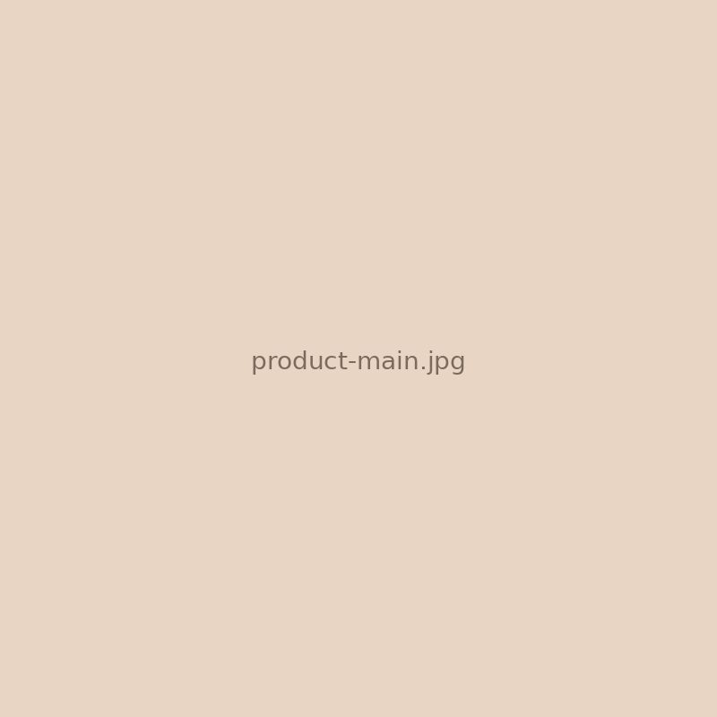
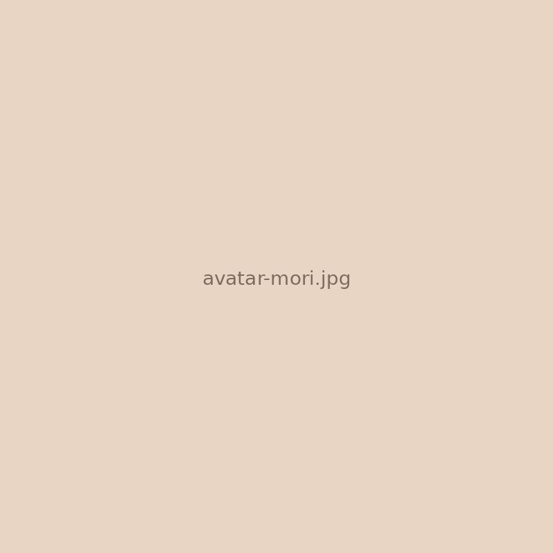
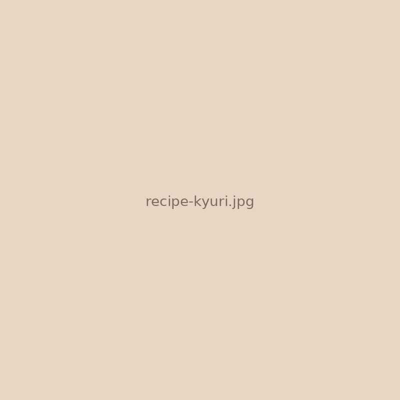
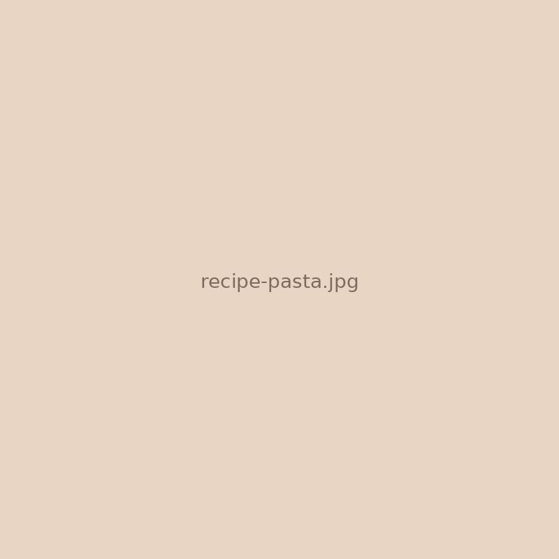
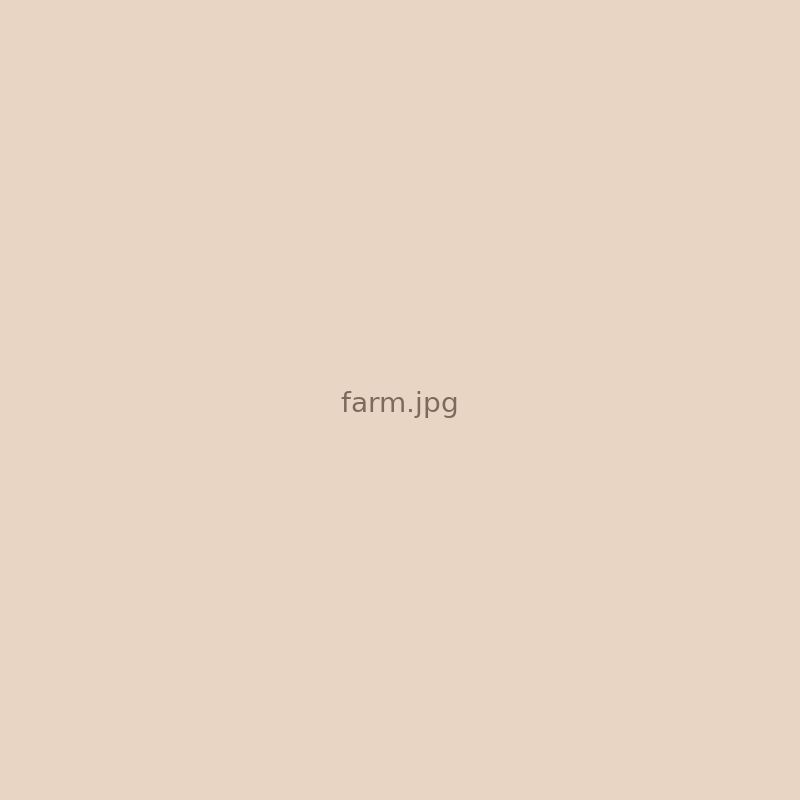

森梅園・農園がご案内します

手に取っていただき
ありがとうございます。
南高梅の梅肉
90g ￥594（税込）〜

こんにちは、森梅園の森です。
この梅肉は、うちの農園で育てた南高梅だけを使って、ひと瓶ずつ手作りしています。
種を取って、果肉だけをぎゅっと。
だから開けたらそのまま、お料理にもおつまみにも使えますよ。
― 森梅園・農園 森 あゆみ
こだわり
なぜ、この梅肉が
選ばれるのか
無添加
梅と塩だけ。
余計なものは入れません
余計なものは入れません
大分県日田市
大山町産
大山町産
寒暖差のある山里で
じっくり育った梅
じっくり育った梅
コンクール
連続受賞
連続受賞
全国梅干しコンクールで
最優秀賞・優秀賞
最優秀賞・優秀賞
栽培から
漬け込みまで
漬け込みまで
一貫した手づくり生産で
品質を守っています
品質を守っています
商品情報
南高梅の梅肉
内容量
90g
価格
¥594（税込）〜
原材料
梅（南高梅）、食塩
賞味期限
製造日から約6ヶ月
保存方法
直射日光を避け、冷暗所で保存。開封後は冷蔵庫で。
アレルギー
特定原材料等不使用
おすすめの食べ方
森がおすすめする
梅肉の楽しみ方
かんたん 30秒
あつあつご飯にちょこんと
一番シンプルで、一番おいしい食べ方。炊きたてご飯に梅肉をのせるだけ。梅の香りがふわっと広がります。

おつまみ 5分
きゅうりの梅肉和え
きゅうりをたたいて、梅肉とごま油で和えるだけ。お酒のおともにも、あと一品ほしいときにも。

アレンジ 15分
梅肉パスタ
茹でたパスタに梅肉・大葉・オリーブオイルを絡めて。さっぱりなのに奥深い、夏の定番になります。
森梅園の商品
他にもこんな商品が
あります
美咲梅
看板商品の梅干し。コンクール最優秀賞受賞。
七折小梅
お弁当にぴったり。小粒で食べやすい赤梅。
干し梅
種なしおやつ梅。そのままパクッと。
さくら茶
春の贈り物に。お祝い事にも。

私たちについて
大分県日田市大山町
森梅園・農園
大分県日田市大山町で、梅とスモモを育てています。
父の代から続く梅づくりを受け継ぎ、栽培から漬け込み、加工まですべて自分たちの手で。
「本物の梅干しを届けたい」
その想いで、毎日梅と向き合っています。
全国梅干しコンクール 連続受賞
オンラインショップ
気に入っていただけたら
ご自宅にもお届けします
贈り物にもどうぞ。
ギフト包装も承ります。
森梅園・農園 公式オンラインショップ